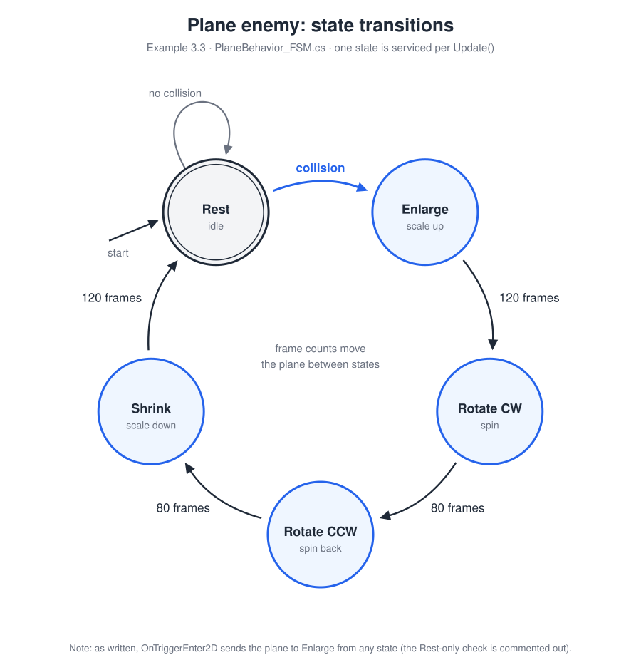
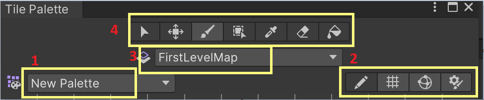

Autonomous Behaviors and Tilemap
Coverage
💡Concepts
- The lerp function: gradual rotation and chasing
- Simple implementation of a finite state machine
- Randomness and simple examples in games
- Sprite sheets and sprite atlases: efficient loading and animation
- Keyframe and sprite animation
🛠Unity skills
- Sprite Editor: extracting individual tiles and sprites
- Animation window: defining keyframe animations
- Animator: animation states, transitions and finite state machines
- Tile Palette and Tilemap: creating levels by painting
Examples for Module 3
Gradual Rotation and Chasing
- W A S D: move the egg
- The green arrow continuously chases after the egg
- TurnRate slider:
0.1(the slider's minimum): turns very slowly toward the egg (a rate of0would not turn at all)2(the maximum): quickly points towards the egg0.1 < rate < 2: turns gradually, from very slow (close to 0.1) to very quick (close to 2)
Egg
WASD_Movement: trivial behavior.
GreenArrowBehavior
- Public variables:
mTurnRate: connects to the TurnRate slidermMyTarget: connects to the Egg
PointAtPosition(): pointstransform.uptoward any given position, by incrementally rotatingtransform.upto align withV.Iftransform.upandVpoint in exactly opposite directions, the turning doesn't work.Update(): callsPointAtPosition(), then moves in the direction oftransform.up.
In-game object movement considerations
| Kind of control | What it means |
|---|---|
| Easy | Direct control: you control the position and direction of the object's movement. |
| Less easy | Indirect control: e.g., you control the velocity of an object. |
| Obey the rules of physics | Indirect control in a world with physics (gravity and potential collisions): you configure the physics to control the object's movement. |
| Follow your own algorithm | No control: autonomous (as in this case). |
- Gradual rotation:
Vector3.LerpUnclamped() - The
PointAtPosition()function: quite reusable - In-game object movement considerations
- In
PointAtPosition(), what would happen ifrwere exactly1?Show answer
Vector3.LerpUnclamped(transform.up, v, 1)is exactlyv, so the arrow would snap to face the egg in a single frame. There'd be no gradual turn. Gradual rotation comes fromrbeing small (heremTurnRate.value() * Time.smoothDeltaTime, about 0.03 at TurnRate 2), so each frame turns only a little. - With a low TurnRate, the arrow sometimes circles the egg forever without reaching it. Why?
Show answer
The arrow always moves forward at
kMySpeed(5 units per second) but can only turn a little each frame, so it has a minimum turning circle. If the egg sits inside that circle, the arrow keeps turning toward it but never cuts in tightly enough to reach it. A higher TurnRate makes the circle smaller.
Autonomous Movement with Randomness
- Watch the green arrow chase the egg. When it gets close, the egg respawns at a new position in the pinkish area.
- The slider bar changes the size of the pinkish area (% of the world bounds).
- N: spawn a new GreenArrow. Each new arrow creates its own egg to chase.
- H: hide the eggs (every arrow toggles its own egg).
- Try: spawn 20 arrows, then hide the eggs. See a bunch of patrolling arrows?!
Scene setting
- GameManager (a child of the Main Camera): an empty GameObject for hanging the singleton GameManager.
- TargetBoundBox (pinkish): this box is behind the green arrow, with a larger z-position (the larger the z, the further behind).
Be carefulThe camera settings only allow z values up to 1000:
MainCamera.Far. - GreenArrow: chases after the egg.
GameManager
Awake(): initialization must be done beforeGreenArrowBehavior::Start()!- Has references to:
mTargetBox: the TargetBoundBox, scaled to the size the user specifiesmTargetSize: the TargetBoundSlider slider bar, a child of UI-Canvas
GetTargetBound(): computes a percentage of a given bound. Note the references to:Camera.main: the Camera component on the Main CameraorthographicSize: half the height of the worldorthographicSize * aspect: half the width of the world
GreenArrowBehavior
ComputeNewTargetPosition(): a random target position within a given boundVector3.Distance(): notice this function; it's convenient
- Computing a percentage of a given bound (
GameManager::GetTargetBound()) - A random position in a bound (
GreenArrowBehavior::ComputeNewTargetPosition()) - Distance between two GameObjects:
Vector3.Distance() - GameObject positions: z values are important
- Front is smaller z; behind/far is larger z.
- You should not change an object's z-value during gameplay. It may cause “flipping” rotation. E.g., in
ComputeNewTargetPosition(), change the target's z to2.0fand watch the arrow sometimes flip.
- Slider bar callback function (event driven): efficient, it only computes when there are changes; edited in the UI.
- You press H to hide the eggs. Why do the arrows keep flying around instead of stopping?
Show answer
Hiding only deactivates the egg (
SetActive(false)): it isn't drawn, but its position still exists. Each arrow keeps chasing that invisible position, andCheckTargetPosition()still moves it to a new random spot whenever the arrow gets close. That's the “patrolling” you see. - While the game runs, you make the Game window much wider but leave the slider alone. Does the pink TargetBoundBox resize? Where do new eggs appear?
Show answer
The box doesn't resize:
ComputeTargetBound()runs only inAwake()and when the slider's value changes (NewTargetSize()). ButComputeNewTargetPosition()callsGetTargetBound()every time, using the new aspect ratio, so new eggs can appear outside the old pink box until you move the slider. That's the trade-off of event-driven updates: something that isn't an event can change too.
Finite State Machine
A simple state machine on the Plane
Normally nothing happens. On collision, the plane cycles through these states:


PlaneBehavior_FSM.cs). Click to open it full size.Update() cycle.Implementation keys
- Draw the state diagram!!
- Instance variables for state definition and transition
- An
enumfor the individual states - A
switch(case) statement inUpdate() - State service: each state is a separate function! As states get complicated, they can be defined as instances of different classes (with a shared base class).
Organization
- Partial class: different files implementing the same class.
PlaneBehavior.csandPlaneBehavior_FSM.cseach contain separate details!
- Finite state machines: it's important to draw out all states, and define all possible inputs and state transitions.
- Implementation keys: review the above!
- It's relatively straightforward to define simple, repetitive autonomous behaviors!
- C# partial classes help separate source code into different files for organization.
- You want to add a new 60-frame Pause state between Rotate CCW and Shrink. What needs to change in
PlaneBehavior_FSM.cs?Show answer
Four things: (1) add
ePauseStateto theEnemyStateenum; (2) write aServicePauseState()that counts 60 frames, then goes toeShrinkState; (3) add acase EnemyState.ePauseState:to theswitchinUpdateFSM(); and (4) changeServiceCCWState()to go toePauseStateinstead ofeShrinkState. Update the state diagram first! mStateis declaredprivateinPlaneBehavior_FSM.cs, yetOnTriggerEnter2D()inPlaneBehavior.cssets it. Why is that allowed?Show answer
Both files declare
partial class PlaneBehavior, so they're two parts of one class.privatemeans private to the class, not to the file, so every part can use every member.
FSM + Randomness
- GameManager (hanging off the MainCamera): creates all the planes at startup.
- Plane, randomness:
Start()sets the number of frames in the scale/rotate states to random values.
- The beauty and simplicity of randomness
- Ease of expansion when things are well abstracted
- Each plane's
Start()addsRandom.Range(-30, 30)to its 120-frame Enlarge length. What range of lengths can a plane get?Show answer
90 to 149 frames. With int arguments,
Random.Range(min, max)never returnsmax, so the offset runs from -30 to 29. (With float arguments, both ends are included.) - All 100 planes start enlarging on the very first frame. Why do they look random after a minute?
Show answer
Each plane got its own random state lengths in
Start(), so their cycles have different periods. The small differences add up every cycle, until the planes are all at different points in their cycles.
Keyframe Animation + FSM
- I: trigger Angry
- D: trigger size decrease
- Collide the plane and arrow to trigger an animation state change from the Rest state:
- Arrow: Angry (after the current run, when the state is Rest)
- Plane: size decrease (immediately, interrupting the state flow!)
Define animation clips
The result of keyframe animation: it associates an “animation time period” with a GameObject.
- Select a GameObject in the Hierarchy window.
- Open the Animation window: Window › Animation › Animation.
- Create any animation, and you've associated the defined “animation time period” with the GameObject.
- Create the keyframe animation:
- Default state: when the animation time period is zero.
- Click to move the current-time line.
- Update the GameObject's state (e.g., Transform values in the Scene window).
- Click Add Keyframe (or Left mouse › Add Key) to create a new keyframe.
- Scrub the current-time line to see the defined animation.
Organized as states in the Animator
Transitions between the states define a finite state machine for an object.
- Animator (controller): controls a collection of states. A tool for organizing, as an FSM, all the animations associated with a GameObject (e.g., a character).
- State: in the Animator, a simple wrapper around an existing animation clip.
- Transitions: detailed support for transitions between states. Solo/Mute check boxes are for debugging (test only, or mute, this transition).
- Parameters: you can define these to control the states:
- Bool: you must turn it on/off yourself.
- Trigger: a Bool that the system turns off once it causes a state transition (see Begin).
- Examine: animation state (control over speed), and state transitions (simple conditionals, or control from a script).
Example: my Angry FSM
Here are my example states (Angry FSM):
![Angry animator controller for Example 3.5, shared by the Arrow and the Plane: Entry leads to Rest, the default state. From Rest, the Begin trigger goes to IncSize, and Dec = true goes to DecSize. IncSize goes to RotateLeft, RotateLeft to RotateRight, RotateRight to DecSize, and DecSize back to Rest, each when its clip ends. RestState.cs maps the I key to Begin and the D key to Dec; DecSizeState.cs sets Dec back to false on enter. RotateLeft has an Animation Event that calls FromAnimation(msg) on a script attached to the same object. On collision, ArrowBehavior calls CrossFade("DecSize") on the Plane, jumping straight to DecSize from any state.](3.5.Angry_FSM.svg)
Angry.controller), shared by the Arrow and the Plane. Click to open it full size.- Parameter Begin: a Trigger that causes the transition to IncSize.
- Parameter Dec: a Bool (to show how it works); it could be a Trigger.
Sharing
You can assign the Angry Animator to any GameObject.
- Notice the Arrow and Plane have the same Angry animator controller, and show identical animation from the transformation changes.
- Except: with an Animation Event callback, the object needs a script that defines the event's function (in this case
FromAnimation()), e.g., ArrowBehavior.
Scripts
- ArrowBehavior:
OnTriggerEnter2D(): starts its own Angry cycle (setsBegin), and forces the Plane into the DecSize state (setsDec, thenCrossFade("DecSize"))FromAnimation(): receives the event from the RotateLeft clip
- PlaneBehavior: also defines
FromAnimation(). An Animation Event isn't bound to a particular class: Unity calls the function by name on every script on the same GameObject that defines it. So when the Plane plays RotateLeft,PlaneBehavior::FromAnimation()receives the event, as long as PlaneBehavior is attached to the Plane. If no script on the object defines the function, Unity logs an “AnimationEvent … has no receiver” error. - Angry state behaviors:
- RestState: monitors the keyboard to decide which state to transition to
- DecState: switches off Dec if true (this could be a Trigger)
- The basic concept of keyframe animation:
- When an animation is defined, an object has an animation-time-period attribute.
- Think of animation as a deviation cycle from the initial value; it always returns to the initial value.
- Unity how-to:
- Animation window: create animation clips for a GameObject
- Animator: create a finite state machine: empty states and transitions; parameters to control states and transitions; interrupt the current state and force another (
CrossFade()) - You can share an animator controller when it only controls the transform; with animation events, sharing is trickier.
- Note: when the Arrow is in the Angry cycle, the collision response (another Angry run) only happens after the cycle ends. Contrast this with the Plane, which goes into its response immediately via
CrossFade(). - You can build an FSM with the Animator even with no animations involved. I see both pluses (convenient, less coding) and minuses (messy UI workflow, rigid interface). You decide.
- Pressing D starts DecSize only when the object is resting, but a collision sends the Plane to DecSize at any moment. Why the difference?
Show answer
The D key is read by
RestState.OnStateUpdate(), which only runs while the Rest state is active, and theDectransition only leaves from Rest. A collision callsCrossFade("DecSize", 0.2f), which jumps straight to DecSize from whatever state is playing. - In the IncSize clip, the last keyframe sets the scale to 2. After IncSize ends and the Animator moves on, what is the object's scale?
Show answer
Back to its original scale, not 2. Animation is a temporary deviation from the initial default: once the clip that changed the scale is no longer playing, the attribute returns to its default value.
References
| Unity Manual (Editor) | Unity API (scripting) |
|---|---|
Sprite Animation
Textures in Unity: Sprite Mode
- Single: a simple image of an object.
- Multiple (sprite sheet, sprite atlas): saves load time and/or defines animation.
- Organization of an animated sprite sheet
- How to slice: Automatic (optimized) vs Grid by Cell Size (for animation support)
Unity how-to: slicing a sprite sheet (atlas)
- Import the sprite sheet (Texture Type: Sprite (2D and UI)).
- Select the sprite.
- Set Sprite Mode to Multiple.
- Open the Sprite Editor, click Slice, then Apply.
You may have to install the Sprite Editor using the Package Manager ↗: search for “2D Sprite” under Unity Registry.
- I: toggle Her idle animation. The transition to idle is immediate; the transition out of idle takes a while (about 10 idle cycles:
CrossFade("Her_Entire_Sheet", 10f)). - The HeroKnight animation is RICH (I don't know all of it): E kills the hero, Left mouse attacks, and there's much more!!
An example
- Three sprite sheets: HerPlayer, HimPlayer and TinyTown, sliced into individual sprites:
- HerPlayer and HimPlayer by fixed size (grid-cell count)
- TinyTown with automatic size detection
- Drag an individual sprite to create a GameObject with no animation: e.g., the Tilemap_48 and Tilemap_49 objects are dragged from individual sprite elements (elements 48 and 49 of TinyTown).
- Drag an entire sprite sheet to create a GameObject with an Animator: e.g., HerPlayer (rename the created Animator in the Assets window). Repeat for HimPlayer.
- Sharing the created Animator: unfortunately, this can't be done; the association with the sprite is static. Try it: replace HimPlayer's Animator controller with Her_Entire_Sheet!
- I painfully created the Her_Idle animation clip + state. Lesson learned: this stuff is challenging!
- Not done: to support interactions, we'd have to define colliders for each sprite. Here's a short tutorial ↗ on what you can do (create associated keyframes for the collider).
- Working with a sprite sheet: slice it into individual tiles with the Sprite Editor (remember to set the mode to Multiple)
- Drag to create a GameObject with a default sprite animation
- Create a simple sprite animation and support animation state transitions
- Good animation is tedious and, more importantly, challenging!
- Suppose one cycle of the Her_Idle clip lasts 1 second. About how long does the switch out of idle take after you press I?
Show answer
About 10 seconds.
CrossFade("Her_Entire_Sheet", 10f)measures its duration in units of the current state's length, so 10 means ten idle cycles. Going into idle uses0.1f, a tenth of a cycle, which is why that switch looks immediate. - You slice HerPlayer's sprite sheet with Automatic instead of Grid by Cell Size. What goes wrong in the animation?
Show answer
Automatic slicing crops each frame tightly around its pixels, so frames come out at different sizes, with different pivots, and possibly in a different order. Played in sequence, the character jitters or jumps around. A fixed grid gives every frame the same size and pivot, which animation needs.
References and credits
- Sprite Editor ↗
- TinyTown: kenney.nl/assets/tiny-town ↗
- Kenney: kenney.nl/assets/platformer-characters ↗
- Hero Knight: Unity Asset Store ↗
Tile Palettes and Tilemap
What: create a level by painting it
| Piece | Painting analogy |
|---|---|
| Tile sprite sheet | The paint: the choice of colors to use in a painting |
| Tile Palette | The palette of colors to paint with; here a “color” is a selected tile from the tile sprite sheet |
| Tilemap | The canvas: the target to paint on |
- A D (or ← →): run (W and S do nothing)
- Space: jump
- Left Shift: roll
- Left mouse: attack
- Right mouse: block
- Q: hurt
- E: kill
Tile sprite sheet
- Turn a tile sprite sheet into individual sprites (usually with automatic slicing).
- Remember: the size of each sprite element is controlled/refined by the texture's Pixels Per Unit.
Tile Palette
- Make sure the Tilemap packages are installed: in Window › Package Manager, make sure “2D Tilemap Editor” and “2D Tilemap Extras” are installed.
- To create a Tile Palette: Window › 2D › Tile Palette (see Create a tile palette ↗).
- Remember, this is for painting onto the Tilemap (discussed next). Here's the UI:

| # | Applies to | What it does |
|---|---|---|
| 1 | This palette | Name of this palette (you can create many) |
| 2 | This palette | Operations on this palette: edit, grid on/off |
| 3 | The Tilemap | Which map to draw on |
| 4 | The Tilemap | Drawing mode: select area, move area, brush, … |
Tilemap
- Unity tutorial: Introduction to Tilemaps ↗
- One grid system with many layers of maps.
- Idea: each grid cell contains one tile sprite (again, the tile sprite's size is set by the Pixels Per Unit attribute on the original tile sprite sheet texture).
Example paint operation
- Tile sprite sheet setup: drag in your tile sprite sheet, set it to Multiple, and slice it into individual tiles.
- Open the Tile Palette and create a new palette using your tile sprite sheet.
- Create a Tilemap object (this creates a Grid with one map child). Name the child Background.
- Refine the tile pixel size (this is what I do): paint a tile in the grid, then adjust the tile sprite sheet's Pixels Per Unit (or the grid size) until each tile covers exactly one grid cell.
- Paint the Background. When done, get ready to paint platforms (with colliders): first disable Background (make it inactive).
- Create a new tilemap (Right mouse over Grid › 2D Object › Tilemap › Rectangular). Name it Platforms, select Platforms as the target in the Tile Palette, and paint the platforms.
- Repeat for the MovableTiles map.
Collision support
- Idea: put collidable tiles in separate map layers; in our case, the Platforms map.
- After drawing, you can switch on collision for individual maps by adding a TilemapCollider2D component (Add Component › Tilemap › Tilemap Collider 2D). All the tiles in that layer then have a Collider2D and can detect collisions.
- For more accurate/smooth collision support (on MovableTiles):
- Add a CompositeCollider2D (under Physics 2D) to the Tilemap's map to smooth out issues caused by too many colliders. Here's a short discussion of the issue ↗.
- A Rigidbody2D is added to the map automatically; you'll probably want to change its type to Kinematic.
- Set TilemapCollider2D › Composite Operation to Merge.
- A Collider2D's size can be adjusted (e.g., larger or smaller than the actual object).
- For a collision to occur, one of the parties must have a Rigidbody2D (everything you learned about collision in Unity applies here). So if the hero walks over the tiles, the hero should have a Rigidbody2D (and at least one Collider2D). Recall:
- Dynamic: moves according to physics (try setting Gravity Scale to 0)
- Kinematic: only for collision; it can't respond (no movement after colliding)
Player/Tilemap layering (front/back)
- See this video ↗.
- Control: every object's Renderer › Additional Settings › Order in Layer.
- Layers: 2 = HeroKnight, 1 = Platform, 0 = Background.
- Tile Palette: how to create one, and how to paint on different maps
- Tilemap: separate maps for separate characteristics, including colliders
- Collisions: probably always use composite colliders for platformers
- The HeroKnight's Order in Layer is 2, Platforms is 1 and Background is 0. If you set the HeroKnight's Order in Layer to
0, what might you see?Show answer
The hero can disappear behind the Background, or flicker in and out where they overlap: with the same Order in Layer, Unity has no fixed rule for which one draws on top. Higher Order in Layer values draw in front.
- The MovableTiles map has a Rigidbody2D set to Kinematic. Why not Dynamic?
Show answer
A Dynamic body is moved by physics: the tiles would fall under gravity and get pushed around when the hero lands on them. A Kinematic body ignores forces and moves only when a script moves it, which is what
PlatformMovementdoes. The Rigidbody2D is still needed for the CompositeCollider2D.
Credits
- TinyTown: kenney.nl/assets/tiny-town ↗
- Kenney: kenney.nl/assets/platformer-characters ↗
- Hero Knight: Unity Asset Store ↗